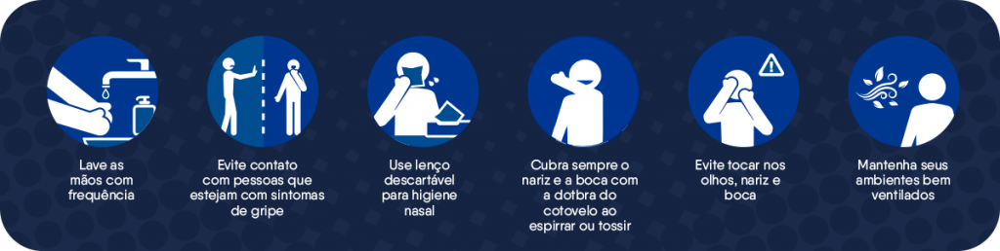

Visitas Proibidas!
Adoramos receber a visitas de todos vocês, aqui no Asilo de Santa Rosa, mas infelizmente devido ao Surto do Novo Vírus (Corona Virus/ Covid-19), que tem alta taxa de letalidade na população mais idosa, tivemos que cancelar todas as visitas a nossa casa. Agradecemos o cuidado e o carinho que todos tem por nós, e nós também nos preocupamos muito com vocês, por isto, lembrem-se de nossos conselhos e ordens, lave suas mãos ao chegar da rua, abaixo colocamos as orientações da Saúde, mas sinceramente tudo que vai ler, você já ouviu muito da gente, agora basta colocar em prática:
Formas de Prevenção
Sempre que não for possível lavar as mãos, use o álcool em gel.
Principais Sintomas
Caso tenhas estes sintomas, procure se isolar, e alerte as Autoridades de Saúde o mais próximo a sua casa, aqui em Nossa Cidade os telefones estão na página da Prefeitura.